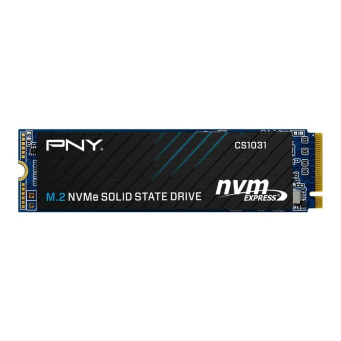

PC Rakitan 5 Jutaan Paling Recommended di 2024

Merakit pc 5 jutaan di tahun 2023 ini sudah bisa mendapatkan performa yang cukup bagus dikarenakan harga komponen pc sudah menurun. Pc kali ini adalah pc versi amd yang sudah menggunakan processor Ryzen 5 5600G APU yang memiliki performa yang cukup bagus baik untuk gaming maupun untuk editing walaupun hanya menggunakan integrated gpu. Untuk Pc ini telah memakai ram 16Gb Dual-Channel untuk memaksimalkan performa dari Ryzen 5 5600G dan sudah menggunakan storage SSD 512Gb
Nah berikut ini adalah spesifikasi Pc-nya
- Asrock A520M-HVS
- Amd Ryzen 5 5600G
- Apacer NOX DDR4 PC25600 3200Mhz 16GB 2x8GB Ram
- SSD PNY CS1031 M.2 NVME 500GB - Gen3x4
- DeepCool PF500 80+
- Cube Gaming Lich
- ID-COOLING SE-214-XT ARGB RAINBOW CPU Cooler
Daftar Isi
1. Motherboard2. Processor
3. RAM
5. Storage
4. PSU
5. Casing
6. CPU Cooler
Total Harga
Kesimpulan
Motherboard
Asrock A520M-HVS
Kali ini kita akan menggunakan Motherboard Asrock A520M-HVS saja untuk menghemat budget. Asrock A520M-HVS mendukung processor amd dengan socket AM4 dengan dukungan memori ram DDR4 hingga 64GB dengan kecepatan hingga 4733 MHz jika ram mau di OC walaupun disini hanya terdapat 2 slot saja bukan 4 slot ram. Pada motherboard ini terdapat satu slot M.2 dan empat port sata. Motherboard ini berukuran M-Atx. Motherboard Asrock A520M-HVS adalah pilihan yang baik karena harganya yang termurah dibandingkan dengan kompetitornya yang bahkan memiliki spesifikasi dan fitur yang sama.
Processor
AMD Ryzen 5 5600G
AMD Ryzen 5 5600G dijual dengan harga 1,8 jutaan saja. processor ini memiliki performa yang sangat bagus dengan 6 Core dan 12 thread jadi poin utama yang dibawa prosesor ini. Clockspeed pada processor ini cukup bagus dengan Base clock 3.9 Ghz dan max boost clock up to 4.4 Ghz. Lalu Total L3 cache 16MB, dan default TDP hanya 65W.
RAM
Apacer NOX DDR4 PC25600 3200Mhz 16GB 2x8GB Ram

Pada harga 600 ribuan saja kita sudah bisa mendapatkan Ram 16gb Dual-Channel, Ram ini bahkan memiliki kecepatan 3200Mhz yang bagus untuk Ryzen 5 5600G karena bisa meningkatkan performa dari APU tersebut.
Storage
PNY CS1031 M.2 NVME 500GB Gen3x4
Untuk melengkapi komputer kamu bisa memakai SSD dari PNY juga, dengan ini kecepatan komputer akan lebih bagus dibandingkan dengan memakai HHD. SSD biasanya digunakan untuk instal OS dan instal game agar lebih cepat kinerjanya. SSD ini memiliki kecepatan Read Up to 2200MB/s dan kecepatan Write up to 1200MB/s.
PSU
DeepCool PF500 500Watt 80+
DeepCool PF500 500Watt 80+ bisa menjadi salah satu pilihan untuk power supply yang bagus dengan budget menengah. Memakai PSU ini sudah lebih dari cukup kok untuk mengangkat spek PC di atas. PSU ini sudah memiliki proteksi OPP/OVP/SCP yang sudah cukup aman untuk PC ini.
Casing
Cube Gaming Lich
Dalam memilih sebuah casing itu relatif dari perasaan pengguna, misal kamu suka dengan nuansa warna putih silahkan untuk membelinya. Sebenarnya ada case yang lebih bagus lagi, tapi ini saja rasanya sudah lebih dari cukup untuk membuat PC gaming.
Cpu Cooler
ID-COOLING SE-214-XT ARGB RAINBOW CPU Cooler
Pada pc ini kita akan menggunakan cooler ID-COOLING SE-214-XT ARGB yang memiliki performa yang lebih dari cukup untuk mendinginkan Processor AMD Ryzen 5 5600G dan sekaligus dapat menambah estetika dari PC kali ini.
Total Harga Keseluruhan PC
| Komponen | Nama | Harga |
|---|---|---|
| Motherboard | Asrock A520M-HVS | Rp 955.000 |
| Processor | Amd Ryzen 5 5600G | Rp 1.870.000 |
| RAM | Apacer NOX DDR4 PC25600 3200Mhz 16GB 2x8GB Ram | Rp 645.000 |
| Storage | SSD PNY CS1031 M.2 NVME 500GB - Gen3x4 | Rp 480.000 |
| PSU | DeepCool PF500 80+ | Rp 525.000 |
| Casing | Cube Gaming Lich | Rp 470.000 |
| Cpu Cooler | ID-COOLING SE-214-XT ARGB RAINBOW CPU Cooler | Rp 295.000 |
| Total | Rp 5.240.000 | |
Kesimpulan
Ini hanya build PC saja ya bukan build komplit, kalau teman-teman mau yang rasa komplit dengan monitor, keyboard, dan mouse setidaknya butuh budget lagi 1,5 - 2 jutaan. PC rakitan ini sudah lebih dari cukup untuk memainkan beberapa game kesayangan kamu